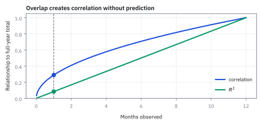
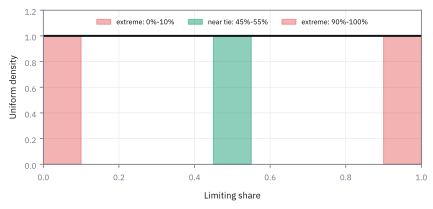

9.4 Worked Computation — $\mathbb E_0[W_{t+s}W_s]$
ค่าเฉลี่ยของผลคูณจากสองเวลาเท่ากับเวลาที่ทั้งคู่ใช้ร่วมกัน และนี่คือเหตุผลที่เดือนแรกดูเหมือนบอกอะไรเกี่ยวกับทั้งปี ทั้งที่ไม่ได้บอก
กองทุนหนึ่งมี SD ของ P&L รายปี \$12 ล้าน มกราคมปิดบวก \$2 ล้าน ผู้บริหารพูดในที่ประชุมว่า “ด้วยจังหวะนี้ ทั้งปีจะได้ \$24 ล้าน” นักวิเคราะห์เสริมว่า “ผลเดือนแรกมี correlation กับผลทั้งปี 0.29 จึงอธิบายผลทั้งปีได้ 29%” ใครพูดถูก และควรคาดผลทั้งปีเท่าไร?
ลองตอบก่อนเปิดเฉลย
ผิดทั้งคู่ ถ้า P&L เดินแบบ Brownian motion ไม่มี drift คำทำนายทั้งปีคือ \$2 ล้าน ไม่ใช่ \$24 ล้าน และยังคลาดได้หนึ่ง SD ราว \$11.49 ล้าน correlation 0.289 จริง แต่สัดส่วนที่อธิบายได้คือ $0.289^2=1/12\approx8.33\%$ และที่อธิบายได้ก็เพราะมกราคมเป็นส่วนหนึ่งของทั้งปีอยู่แล้ว เกี่ยวกับกุมภาพันธ์ถึงธันวาคม มกราคมบอกได้ 0%
ภาพรวมก่อนลงสูตร
ตัวเลข 0.289 มาจากบรรทัดเดียว: ค่าเฉลี่ยของผลคูณ $W_{t+s}W_s$ เท่ากับ $s$ คือเวลาที่สองจุดใช้ร่วมกัน หน้านี้เป็นการคำนวณเต็มรูปของบรรทัดนั้นทีละขั้น ทุกบรรทัดมีเหตุผลกำกับ และคำนวณพจน์ไขว้สองทางให้ตรวจกันเอง
ทำไมต้องลำบาก เพราะ $W_s$ กับ $W_{t+s}$ พันกันอยู่ เส้นทางที่ไปถึงเวลา $t+s$ ต้องผ่านเวลา $s$ ก่อน แต่กติกาของ Brownian motion ให้เครื่องมือกับ “การขยับในช่วงที่ไม่ทับกัน” เท่านั้น ทริกจึงเป็นตัวเดียวกับหน้าfiltration ในเวลาต่อเนื่อง: แยกค่าที่เวลาหลังเป็นส่วนที่รู้แล้วบวกส่วนใหม่ จากนั้นขยายผลเป็นสูตร covariance $\min(u,v)$ แปลงเป็น correlation แล้วกลับมาตอบคำถามของกองทุนเป็นดอลลาร์
รูปด้านล่างคือความคิดทั้งหน้า: สองจุดบนเส้นทางเดียวกันใช้แถบส้มร่วมกัน ส่วนแถบเขียวเป็นของจุดหลังคนเดียว ผลคูณของสองจุดเฉลี่ยแล้วเหลือแค่ความยาวแถบส้ม
รูป — สองเวลาบนเส้นทางเดียวกันใช้ประวัติร่วมกันจนถึงเวลาที่มาก่อน
ศัพท์ที่ใช้ในหัวข้อนี้
- $\mathbb E_0$
- ค่าเฉลี่ยเมื่อยืนอยู่ที่เวลา 0 ซึ่งยังรู้แค่ $W_0=0$ จึงเท่ากับค่าเฉลี่ยธรรมดา ตัวห้อย 0 มีไว้เตือนว่ากำลังมองจากจุดเริ่มต้น
- ประวัติร่วม (shared history)
- ช่วงเวลาที่สองจุดบนเส้นทางเดียวกันสะสมร่วมกัน สำหรับเวลา $u$ กับ $v$ คือช่วง 0 ถึงเวลาที่มาก่อน เป็นที่มาของ covariance ทั้งหมด
- Covariance ของระดับ
- covariance ระหว่างค่า $W_u$ กับ $W_v$ ทั้งก้อน ไม่ใช่ระหว่างการขยับสองช่วง ใช้บอกว่าค่าที่สองเวลาเกาะกันแค่ไหนเพราะเดินมาด้วยกัน
- $R^2$
- correlation ยกกำลังสอง คือสัดส่วน variance ของตัวหนึ่งที่เส้นตรงจากอีกตัวอธิบายได้ ตัวเลขนี้ต่างหากที่ตอบคำว่า “อธิบายได้กี่ %”
- Regression slope
- $\beta=\operatorname{Cov}(Y,X)/\operatorname{Var}(X)$ คือคำทำนาย $Y$ ขยับเท่าไรเมื่อ $X$ ขยับหนึ่งหน่วย ใช้เปลี่ยน covariance เป็นกฎพยากรณ์ (เป็นสูตรเดียวกับ hedge ratio ในdistribution แบบมีเงื่อนไขของ MVN)
- Overlapping windows
- หน้าต่างวัดผลสองอันที่ใช้ช่วงเวลาเดียวกันบางส่วน เช่นผลตอบแทนย้อนหลัง 12 เดือนที่วัดทุกเดือน ความเกี่ยวกันที่เห็นอาจมาจากการนับช่วงเดียวกันซ้ำ ไม่ใช่การทำนาย
สัญลักษณ์และหน่วย
| สัญลักษณ์ | ความหมาย | หน่วย |
|---|---|---|
| $W_t$ | SBM ที่เวลา $t$ | รากของปี |
| $s,\ t$ | เวลาแรก และระยะที่รอต่อจากเวลาแรก | ปี |
| $A,\ B$ | $A=W_s$ การขยับช่วงแรก และ $B=W_{t+s}-W_s$ การขยับช่วงที่สอง | รากของปี |
| $u,\ v$ | เวลาสองจุดใด ๆ บนเส้นทาง | ปี |
| $\rho,\ R^2$ | correlation และสัดส่วน variance ที่อธิบายได้ | ไม่มีหน่วย |
| $P_t,\ \sigma_P$ | P&L สะสมถึงเวลา $t$ และ SD ของ P&L หนึ่งปี | ล้านดอลลาร์, ล้านดอลลาร์ต่อรากของปี |
| $J,\ Y$ | $W_{1/12}$ ระดับสิ้นมกราคม และ $W_1$ ระดับสิ้นปี | รากของปี |
ขั้นที่ 1 — แยกค่าที่เวลาหลังเป็นส่วนร่วมบวกส่วนใหม่
นิยาม Brownian motion ไม่ได้ให้เครื่องมือกับระดับที่พันกัน มันให้เครื่องมือกับการขยับในช่วงที่ไม่ทับกัน ขั้นแรกจึงเขียนทุกอย่างใหม่เป็นการขยับ โดยบวกและลบ $W_s$
บรรทัดที่สามเป็นจริงทุกเส้นทาง เพราะบวกและลบตัวเดียวกัน ไม่ได้ประมาณอะไร จุดสำคัญคือเลือกแยกที่เวลา $s$ พอดี: $A$ คือการขยับในช่วง 0 ถึง $s$ ส่วน $B$ คือการขยับในช่วง $s$ ถึง $t+s$ สองช่วงนี้ไม่ทับกัน
กติกาความเป็นอิสระจึงบอกว่า $A$ กับ $B$ อิสระต่อกัน และกติกาการกระจายตัวบอกว่า $A\sim\mathcal N(0,s)$ กับ $B\sim\mathcal N(0,t)$ ถ้าแยกที่เวลาอื่น สองก้อนจะมีช่วงเวลาทับกัน และความเป็นอิสระที่ต้องใช้ต่อก็จะหายไป
ขั้นที่ 2 — กระจายผลคูณ ยังไม่ใช้สมบัติของ Brownian motion เลย
แทนการแยกลงในผลคูณ แล้วกระจายวงเล็บ ขั้นนี้ใช้แค่พีชคณิตกับกฎว่าค่าเฉลี่ยของผลบวกคือผลบวกของค่าเฉลี่ย (ค่าคาดหวัง) ซึ่งใช้ได้เสมอโดยไม่ต้องขอความเป็นอิสระ จึงควรทำก่อนทุกครั้ง
ปัญหาหนึ่งก้อนกลายเป็นสองก้อนที่ง่ายกว่า: $A^2$ คือกำลังสองของการขยับช่วงแรก และ $AB$ คือพจน์ไขว้ของสองช่วงที่ไม่ทับกัน สมบัติของ Brownian motion จะเข้ามาทำงานตอนคำนวณสองก้อนนี้
ขั้นที่ 3 — พจน์ไขว้เป็นศูนย์ ตรวจได้สองทาง
พจน์ไขว้ดูยากที่สุด เพราะเป็นผลคูณของสองตัวสุ่ม ทางแรกใช้เครื่องมือของ filtration: เฉลี่ยสองชั้น โดยชั้นในยืนที่เวลา $s$ ซึ่งเป็นเวลาที่ $A$ รู้ค่าแล้ว ทางที่สองใช้ความเป็นอิสระตรง ๆ
ทางแรก: บรรทัดแรกคือ tower property เฉลี่ยสองชั้นเท่ากับเฉลี่ยชั้นเดียว บรรทัดที่สองดึง $A$ ออก เพราะที่เวลา $s$ มันเป็นตัวเลขที่เห็นแล้ว บรรทัดที่สามใช้ว่า $B$ คือการขยับหลังเวลา $s$ ซึ่งมีค่าเฉลี่ยศูนย์ไม่ว่าจะเห็นอดีตแบบไหน ทางนี้ใช้แค่ “การขยับในอนาคตเฉลี่ยศูนย์เมื่อรู้อดีต” ซึ่งอ่อนกว่าความเป็นอิสระ จึงยังใช้ได้กับ martingale ทั่วไปที่ไม่ใช่ Brownian motion เช่นในItô integral
ทางที่สอง: $A$ กับ $B$ อิสระกัน และตัวแปรอิสระมีค่าเฉลี่ยของผลคูณเท่ากับผลคูณของค่าเฉลี่ย (ผลของความเป็นอิสระ) สั้นกว่า แต่ต้องการความเป็นอิสระเต็มรูป สองทางให้ศูนย์เหมือนกัน การที่สองทางตรงกันยืนยันว่าเราไม่ได้ใช้อะไรผิด
ขั้นที่ 4 — ก้อนที่เหลือ: ค่าเฉลี่ยของกำลังสอง ไม่ใช่กำลังสองของค่าเฉลี่ย
เหลือ $\mathbb E_0[A^2]$ ค่าเฉลี่ยของ $A$ เป็นศูนย์ แต่ค่าเฉลี่ยของ $A^2$ เป็นศูนย์ไม่ได้ เพราะกำลังสองติดลบไม่ได้ ใช้สูตรลัดของ variance (variance และ SD) จัดข้างใหม่
บรรทัดที่สองย้าย $(\mathbb E_0[A])^2$ ไปอีกข้าง บรรทัดที่สามแทน $A=W_s\sim\mathcal N(0,s)$ เมื่อค่าเฉลี่ยเป็นศูนย์ ค่าเฉลี่ยของกำลังสองก็คือ variance พอดี
ขั้นที่ 5 — รวมสองก้อน แล้วตรวจด้วยเหรียญสี่เส้นทาง
นำพจน์ไขว้ที่เป็นศูนย์กับ $\mathbb E_0[A^2]=s$ มาแทนในผลคูณที่กระจายแล้ว ได้คำตอบ แล้วตรวจด้วยกรณีที่นับได้ด้วยมือ: ก้าวแบบเหรียญ $\pm1$ ซึ่งมี variance 1 ต่อก้าว โดยให้ $s=1$ ก้าว และ $t=1$ ก้าว
คำตอบไม่มี $t$ อยู่เลย จะรอหลังเวลา $s$ นานเท่าไรก็ได้เท่าเดิม เพราะทุกอย่างหลัง $s$ อิสระและเฉลี่ยศูนย์ สิ่งเดียวที่ทำให้สองจุดเกาะกันคือช่วง 0 ถึง $s$ ที่เดินมาด้วยกัน
สี่เส้นทางของเหรียญ (ขึ้นขึ้น ขึ้นลง ลงขึ้น ลงลง) ให้ผลคูณ 2, 0, 0, 2 เฉลี่ยได้ 1 เท่ากับจำนวนก้าวที่ใช้ร่วมกันพอดี สังเกตว่าสองเส้นทางกลางให้ผลคูณศูนย์ เพราะก้าวที่สองดึงเส้นกลับมาที่ศูนย์ โค้ดท้ายหน้านับครบทั้ง 32 เส้นทางของ $s=2$, $t=3$ ได้ 2 ตรงกับสูตร
รูป — เหรียญสองก้าว: ผลคูณของสองเวลาเฉลี่ยได้จำนวนก้าวที่ใช้ร่วมกัน
ขั้นที่ 6 — ขยายเป็น covariance ของสองเวลาใด ๆ
คำตอบของหน้านี้ได้แล้ว แต่สูตรที่ใช้บ่อยกว่าคือ covariance ของ $W_u$ กับ $W_v$ สำหรับ $u$ และ $v$ ใด ๆ ให้ $u\le v$ ก่อน แล้วตั้ง $s=u$ และ $t=v-u$
บรรทัดแรกคือสูตรลัดของ covariance ค่าเฉลี่ยของ SBM เป็นศูนย์ พจน์ลบจึงหาย บรรทัดที่สามคือผลที่เพิ่งได้ที่เปลี่ยนชื่อตัวแปร ถ้า $u\gt v$ ก็สลับบทบาทกัน คำตอบจึงเป็นเวลาที่มาก่อนเสมอ
ระวังการอ่าน: $\min$ ในสูตรหมายถึงเวลาที่มาก่อน ไม่ใช่ค่าของเส้นทางที่ต่ำกว่า มันคือความยาวของประวัติที่สองจุดใช้ร่วมกัน และเพราะเวกเตอร์ $(W_{t_1},\dots,W_{t_n})$ เป็นmultivariate normal ค่าเฉลี่ยศูนย์กับ covariance matrix $\min(t_i,t_j)$ จึงบอก distribution ร่วมของ SBM ที่ทุกชุดของเวลาได้ครบ ไม่ต้องรู้อะไรเพิ่ม
รูป — แผนที่ของ min(u, v): เส้นที่ covariance เท่ากันเป็นรูปตัว L
ขั้นที่ 7 — แปลงเป็น correlation: เหลือแค่สัดส่วนของเวลา
covariance ยังมีหน่วยเวลา เทียบข้ามคู่ไม่ได้ หารด้วย SD ของทั้งสองจุด คือ $\sqrt u$ และ $\sqrt v$ ตามนิยาม correlation (inner product มุม และ correlation)
จังหวะที่ตัดกันคือเขียน $u=\sqrt u\,\sqrt u$ แล้ว $\sqrt u$ ตัวหนึ่งหักกับตัวส่วน เหลือรากของสัดส่วนเวลาสั้นต่อเวลายาว ไม่มีหน่วยเหลือ วันที่ 1 กับวันที่ 2 จึงเกาะกัน $\sqrt{1/2}\approx0.707$ เท่ากับปีที่ 1 กับปีที่ 2
บรรทัดสุดท้ายสำคัญที่สุดสำหรับโจทย์เปิดเรื่อง: correlation เป็นรากของสัดส่วน จึงดูใหญ่กว่าสัดส่วนที่อธิบายได้เสมอ ส่วน $R^2$ คือสัดส่วนเวลาที่เห็นไปแล้วพอดี
ขั้นที่ 8 — มกราคมเทียบทั้งปี
โจทย์ให้อะไรมาบ้าง: มกราคมมีราว 21 วันทำการจาก 252 จึงเป็น $21/252=1/12$ ปี ให้ $J:=W_{1/12}$ คือระดับสิ้นมกราคม และ $Y:=W_1$ คือระดับสิ้นปี ส่วนกุมภาพันธ์ถึงธันวาคมคือ $Y-J$
คำตอบ: correlation 0.289 แต่อธิบายได้ 8.33% ไม่ใช่ 28.9% สามเดือนอธิบายได้ 25% หกเดือน 50% และสิบเอ็ดเดือน 91.7% คือเท่ากับสัดส่วนของปีที่เห็นไปแล้วทุกครั้ง บรรทัดสุดท้ายตอบคำถามที่ควรถามจริง: มกราคมกับสิบเอ็ดเดือนที่เหลือมี covariance ศูนย์พอดี
ตรวจเองใน 10 วินาที: $\sqrt{12}\approx3.464$ ดังนั้น $1/3.464\approx0.289$ และ $0.289^2\approx0.0833$
รูป — correlation ดูสูงกว่าสัดส่วนที่อธิบายได้เสมอ

ขั้นที่ 9 — ใส่หน่วยดอลลาร์ แล้วทำนายทั้งปีหลังเห็นมกราคม
ถึงเวลาตอบผู้บริหาร แบบจำลอง P&L สะสมคือ $P_t=\sigma_PW_t$ หน่วยล้านดอลลาร์ โดย $\sigma_P=12$ และมกราคมได้ $P_{1/12}=2$ ยืนที่สิ้นมกราคม แยกผลทั้งปีเป็นส่วนที่รู้แล้วกับส่วนที่เหลือแบบเดียวกับการแยก $A+B$ แล้วหา regression slope จาก covariance ด้วยสูตรค่าเฉลี่ยแบบมีเงื่อนไขของ MVN ($\mu_{2\cdot1}=\mu_2+\Sigma_{21}\Sigma_{11}^{-1}(x_1-\mu_1)$, $\Sigma_{2\cdot1}=\Sigma_{22}-\Sigma_{21}\Sigma_{11}^{-1}\Sigma_{12}$) เป็นการตรวจอีกทาง
มกราคมมี SD \$3.46 ล้าน กำไร \$2 ล้านจึงเป็นเดือนที่ดีเพียง $2/3.464\approx0.58$ SD เดือนแบบนี้เกิดบ่อย ไม่ใช่หลักฐานของฝีมือ คำทำนายทั้งปีคือ \$2 ล้าน ความไม่แน่นอนที่เหลือคือ $\sqrt{132}\approx\$11.49$ ล้าน และสองช่วงบวก variance กันได้ $12+132=144=12^2$ พอดีเพราะอิสระกัน
สูตร MVN ให้ผลเดียวกัน: covariance ในหน่วยดอลลาร์คือ $12^2\times\tfrac1{12}=12$ variance ของมกราคมก็ 12 slope จึงเท่ากับ 1 แปลว่ากำไรมกราคมหนึ่งดอลลาร์เพิ่มคำทำนายทั้งปีหนึ่งดอลลาร์ เพราะมันถูกนับอยู่ในทั้งปีแล้ว ไม่ใช่สิบสองดอลลาร์ ส่วน \$24 ล้านมาจากการคูณ 12 ซึ่งสมมติว่ามกราคมคือ drift ที่จะซ้ำทุกเดือน แต่ drift ที่ประมาณจากเดือนเดียวคือ $12P_{1/12}$ มี SD $12(3.464)\approx\$41.6$ ล้านต่อปี ตัวเลข “จังหวะนี้” จึงคลาดได้ ±\$41.6 ล้าน ไม่มีความหมายเลย
รูป — หลังเห็นมกราคม: คำทำนายแบนที่ \$2 ล้าน ไม่ได้พุ่งไป \$24 ล้าน
รูป — การจำลองยืนยันสิ่งที่พิสูจน์

ความเกี่ยวกันที่เกิดจากการนับซ้ำ
อ่าน correlation เป็น % ที่อธิบายได้: 0.289 ไม่ใช่ 28.9% ของอะไรเลย สัดส่วนที่อธิบายได้คือ $R^2=8.33\%$ และแม้ 8.33% นั้นก็มาจากการที่มกราคมอยู่ในทั้งปี ไม่ใช่การทำนาย
หน้าต่างย้อนหลังที่ทับกัน: ผลตอบแทนย้อนหลัง 12 เดือนที่วัดทุกสิ้นเดือน สองค่าที่ติดกันใช้ 11 เดือนร่วมกัน (รูปด้านล่าง) covariance คือ 11/12 ปี และ variance ของแต่ละค่าคือ 1 ปี correlation จึงเป็น $11/12\approx0.917$ ทั้งที่แต่ละเดือนอิสระต่อกันหมด กราฟจะดูเรียบและมีแนวโน้ม ซึ่งเป็นภาพลวงจากการนับซ้ำ สังเกตว่าการขยับที่ทับกันให้สัดส่วนตรง ๆ (overlap หารความยาว) ไม่ใช่รากเหมือน correlation ของระดับ
ใช้ $\min(u,v)$ แทนค่าเฉลี่ยของผลคูณเมื่อมี drift: ถ้ากองทุนมี drift \$6 ล้านต่อปี $\mathbb E[P_{1/12}P_1]=(0.5)(6)+12=15$ ไม่ใช่ 12 เพราะค่าเฉลี่ยไม่เป็นศูนย์แล้ว covariance ยังเป็น 12 เหมือนเดิม ต้องหักผลคูณของค่าเฉลี่ยก่อนเสมอ
รูป — หน้าต่าง 12 เดือนสองอันที่วัดห่างกันหนึ่งเดือน ใช้ข้อมูลร่วมกัน 11 เดือน
ใช้ทำอะไรบนโต๊ะจริง
คณะกรรมการลงทุนใช้การคำนวณมกราคมเทียบทั้งปีตอบว่าผลระหว่างปีบอกอะไรได้ และทำไมไม่ควรตัดสินผู้จัดการกองทุนจากไตรมาสเดียว ทีม risk ใช้การแบ่ง variance $12+132=144$ แบ่งงบความเสี่ยงของปีเป็นส่วนที่ใช้ไปแล้วกับส่วนที่เหลือ และนักวิจัยใช้กับดักหน้าต่างทับกันตรวจสถิติที่คำนวณจากข้อมูลย้อนหลังแบบ rolling ก่อนเชื่อว่าเห็นแนวโน้ม
ตาราง covariance $\min(t_i,t_j)$ ยังเป็นสะพานกลับไปที่การจำลอง MVN ด้วย Cholesky: ถ้าต้องจำลอง $W$ ที่หลายวันพร้อมกัน ให้แตก Cholesky ของตารางนี้ ผลที่ได้คือการบวกสะสมของก้อนสุ่มอิสระ ซึ่งก็คือวิธีจำลองแบบ $\sqrt{\Delta t}\,Z$ ของหน้า standard Brownian motion (โจทย์ข้อ 2)
โจทย์ตรวจความเข้าใจ
1. กองทุนเดิม ($\sigma_P=\$12$ ล้าน) ปิดไตรมาสแรกบวก \$5 ล้าน correlation ของไตรมาสแรกกับทั้งปีเป็นเท่าไร อธิบายได้กี่ % และควรคาดทั้งปีเท่าไร?
เฉลย
สามเดือนคือ $3/12$ ปี correlation $\sqrt{3/12}=0.5$ อธิบายได้ $0.5^2=25\%$ คำทำนายทั้งปีคือ \$5 ล้าน (ไม่ใช่ \$20 ล้าน) และ SD ที่เหลือคือ $12\sqrt{9/12}\approx\$10.39$ ล้าน
2. เขียน covariance matrix ของ $(W_1,W_2,W_3)$ แล้วแตก Cholesky ได้ $L$ หน้าตาอย่างไร และบอกอะไรเกี่ยวกับการจำลอง?
เฉลย
ช่อง $(i,j)$ คือ $\min(i,j)$ ได้แถว $(1,1,1)$, $(1,2,2)$, $(1,2,3)$ Cholesky ได้ $\ell_{11}=1$, $\ell_{21}=1$, $\ell_{22}=\sqrt{2-1}=1$, $\ell_{31}=1$, $\ell_{32}=(2-1)/1=1$, $\ell_{33}=\sqrt{3-1-1}=1$ คือสามเหลี่ยมล่างที่เป็น 1 ทั้งหมด $W=Lz$ จึงเป็นผลบวกสะสม $z_1$, $z_1+z_2$, $z_1+z_2+z_3$ ตรงกับการจำลองแบบบวกท่อนสุ่มอิสระทีละท่อน
3. กลับทิศคำถาม: ถ้ารู้ว่าทั้งปีกองทุนได้ \$12 ล้านพอดี แต่ยังไม่เห็นรายเดือน ควรเดาว่ามกราคมได้เท่าไร และทำไม slope ไม่เป็น 1 เหมือนเดิม?
เฉลย
slope ใหม่คือ $\operatorname{Cov}(P_{1/12},P_1)/\operatorname{Var}(P_1)=12/144=1/12$ คำทำนายมกราคมจึงเป็น $12/12=\$1$ ล้าน คือแบ่งผลทั้งปีเท่า ๆ กันตามเวลา correlation เท่าเดิม 0.289 ทั้งสองทิศ แต่ slope ต่างกันเพราะหารด้วย variance ของตัวที่ใช้ทำนายซึ่งต่างกัน: มกราคมมี variance 12 ทั้งปีมี 144
คำนวณซ้ำด้วย JavaScript
เปิดดูโค้ด
// Cov(W_u, W_v): the length of the history the two times share.
const covBM = (u, v) => Math.min(u, v);
const corrBM = (u, v) => Math.min(u, v) / Math.sqrt(u * v);
// Correlation of two increments of equal length L whose windows overlap by `overlap`.
const corrWindows = (L, overlap) => overlap / L;
// Exact average of W_(s+t) * W_s over every coin path: s then t steps of +/-1 (each step has variance 1).
function coinAverage(s, t) {
let total = 0;
const count = 2 ** (s + t);
for (let code = 0; code < count; code++) {
let w = 0, ws = 0;
for (let k = 0; k < s + t; k++) {
w += (code >> k) & 1 ? 1 : -1;
if (k === s - 1) ws = w;
}
total += w * ws;
}
return total / count;
}
// Covariance matrix of W at the given times, and its Cholesky factor.
const covMatrix = times => times.map(u => times.map(v => covBM(u, v)));
function cholesky(S) {
const n = S.length, L = S.map(() => new Array(n).fill(0));
for (let j = 0; j < n; j++) {
let p = S[j][j];
for (let k = 0; k < j; k++) p -= L[j][k] ** 2;
if (!(p > 0)) throw new RangeError(`Not positive definite at pivot ${j + 1}`);
L[j][j] = Math.sqrt(p);
for (let i = j + 1; i < n; i++) {
let x = S[i][j];
for (let k = 0; k < j; k++) x -= L[i][k] * L[j][k];
L[i][j] = x / L[j][j];
}
}
return L;
}
// mulberry32 + Box-Muller: seeded standard Normals.
function normals(seed) {
let a = seed >>> 0, spare = null;
const u = () => {
a = (a + 0x6D2B79F5) >>> 0;
let x = Math.imul(a ^ (a >>> 15), a | 1);
x ^= x + Math.imul(x ^ (x >>> 7), x | 61);
return (((x ^ (x >>> 14)) >>> 0) + 0.5) / 4294967296;
};
return () => {
if (spare !== null) { const z = spare; spare = null; return z; }
const r = Math.sqrt(-2 * Math.log(u())), angle = 2 * Math.PI * u();
spare = r * Math.sin(angle);
return r * Math.cos(angle);
};
}
// Simulate January and the other eleven months, then measure what the formulas predict.
function simulateYears(n, seed) {
const z = normals(seed), s = 1 / 12;
let sj = 0, sy = 0, sr = 0, jj = 0, yy = 0, rr = 0, jy = 0, jr = 0;
for (let i = 0; i < n; i++) {
const jan = Math.sqrt(s) * z(), rest = Math.sqrt(1 - s) * z(), year = jan + rest;
sj += jan; sy += year; sr += rest; jj += jan * jan; yy += year * year; rr += rest * rest;
jy += jan * year; jr += jan * rest;
}
const cov = (xy, sx, sz) => xy / n - (sx / n) * (sz / n);
const cJY = cov(jy, sj, sy), cJJ = cov(jj, sj, sj), cYY = cov(yy, sy, sy), cRR = cov(rr, sr, sr), cJR = cov(jr, sj, sr);
return {meanProduct: jy / n, corrJanYear: cJY / Math.sqrt(cJJ * cYY), corrJanRest: cJR / Math.sqrt(cJJ * cRR), slope: cJY / cJJ};
}
const sigmaP = 12, jan = 2, s = 1 / 12; // USD million per sqrt(year); January is 21 of 252 trading days
const covUSD = sigmaP ** 2 * covBM(s, 1), varJan = sigmaP ** 2 * s, varYear = sigmaP ** 2;
console.log(JSON.stringify({
januaryShare: 21 / 252,
coin: {s1t1: coinAverage(1, 1), s2t3: coinAverage(2, 3), s5t0: coinAverage(5, 0)},
cov: {janYear: covBM(s, 1), janRest: covBM(s, 1) - covBM(s, s)},
corr: {jan: corrBM(s, 1), q1: corrBM(3 / 12, 1), h1: corrBM(6 / 12, 1), m11: corrBM(11 / 12, 1)},
r2: {jan: corrBM(s, 1) ** 2, q1: corrBM(3 / 12, 1) ** 2, h1: corrBM(6 / 12, 1) ** 2, m11: corrBM(11 / 12, 1) ** 2},
fund: {sdJan: Math.sqrt(varJan), sdRest: sigmaP * Math.sqrt(1 - s), janInSD: jan / Math.sqrt(varJan),
forecast: 0 + (covUSD / varJan) * (jan - 0), slope: covUSD / varJan, // MVN: mu2 + S21/S11 (x1 - mu1)
conditionalVar: varYear - covUSD * covUSD / varJan, paceWrong: 12 * jan, driftEstimateSD: 12 * Math.sqrt(varJan)},
reverse: {slope: covUSD / varYear, januaryGuessIfYear12: (covUSD / varYear) * 12},
sim: simulateYears(200000, 64),
overlap: {rolling12: corrWindows(12, 11), halfOverlap: corrWindows(12, 6)},
drift: {productWithDrift: (6 * s) * 6 + covUSD, covWithDrift: covUSD},
exercise: {q1Forecast: 5, q1SD: sigmaP * Math.sqrt(9 / 12), cov123: covMatrix([1, 2, 3]),
chol123: cholesky(covMatrix([1, 2, 3]))}
}));สิ่งที่ควรตอบได้หลังอ่าน
- แยก $W_{t+s}=W_s+(W_{t+s}-W_s)$ ที่เวลา $s$ พอดี เพื่อให้ได้สองก้อนที่อิสระกัน แล้วค่อยกระจายผลคูณ
- พจน์ไขว้เป็นศูนย์ได้สองทาง: ยืนที่เวลา $s$ แล้วดึงของที่รู้ออก หรือใช้ความเป็นอิสระตรง ๆ จึงได้ $\mathbb E_0[W_{t+s}W_s]=s$
- $\operatorname{Cov}(W_u,W_v)=\min(u,v)$ คือความยาวประวัติร่วม correlation คือ $\sqrt{u/v}$ ส่วน $R^2=u/v$
- มกราคม +\$2 ล้าน ให้คำทำนายทั้งปี \$2 ล้าน ± \$11.49 ล้าน อธิบายทั้งปีได้ 8.33% และอธิบายสิบเอ็ดเดือนที่เหลือได้ 0%
- หน้าต่างที่ทับกัน 11 จาก 12 เดือนให้ correlation 0.917 โดยไม่มีการทำนายใด ๆ
หน้าถัดไป สมบัติแปลก ๆ ของเส้นทาง Brownian ซูมเข้าไปในเส้นทางเดียวกันนี้ แล้วเจอสิ่งประหลาด: เส้นทางหาความชันไม่ได้เลย แต่ผลรวมของการขยับยกกำลังสองกลับนิ่งเท่ากับเวลาพอดี